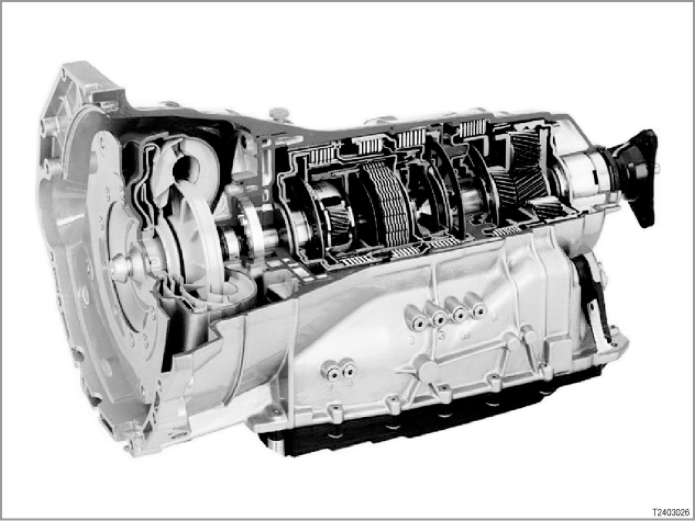

Part 2
24 01 03 (040)
6-speed automatic transmission
E53/E60/E61/E63/E64/E65/E66/E70/E81/E83/E85/E86/E87/E90/E91/E92/E93

Driving downhill
If the EGS control unit detects downhill driving, it will automatically shift down a gear if the vehicle's speed picks up. This enhances the engine's braking effect. A downshift is only effected if the engine speed is below the maximum speed of the lower gear.
The EGS control unit detects downhill driving on the basis of signals from the throttle valve potentiometer (load), wheel speed sensor (road speed) and brake light switch (brake activation).
Braking deceleration and automatic upshift
To decelerate the vehicle, the foot is taken off the gas and the brake depressed as necessary. The gearshift map triggers an upshift when the throttle is closed. These gearshifts are not necessary in conjunction with brake applications as they prevent the engine's braking effect from being exploited.
The intention to apply the brakes can often be anticipated from the accelerator pedal being rapidly released to the zero position. If such an action is detected, the upshift is suppressed for as long as the accelerator pedal is in the zero position and the vehicle is in overrun mode.
Winter program (only with selector lever in position "D")
The winter program is automatically activated if the drive wheels start to spin even at a low rate of acceleration. The winter program ensures better traction by not using 1st gear. Early upshifts reduced the reactions caused by load changes. The winter program is deactivated if the wheels do not spin for several seconds despite high drive torque.
Overlap control
Overlap control provides gentle shift characteristics as follows: With overlap control, several multi-plate clutches are in use at the same time. Here, pressure is reduced in the active multi-plate clutch and at the same time built up in the clutch that is about to be activated. The reduction and build-up of pressure is maintained until a synchronized speed is reached. At this point, the hydraulic pressure for the multi-plate clutch to be activated can be built up completely. Overlap control is active for all gearshifts from 1st to 6th gear and from 6th to 1st gear.
Starter inhibitor
It is only possible to start the engine when the selector lever is in position "P" or "N".
> E53, E83, E85, E86
The EWS (electronic immobilizer) evaluates the following signal from the EGS (electronic transmission control) for the start:
- Selector lever position "P" or "N" as signal via the direct wire
> E60, E61 until 03/07
> E63, E64 until 09/07
> E81, E87, E90, E91, E92, E93
The CAS (Car Access System) evaluates the following signals from the EGS (electronic transmission control) for the start:
- Selector lever position "P" or "N" as CAN message via the powertrain CAN
- Selector lever position "P" or "N" as signal via the direct wire
> E60, E61 from 03/07
> E63, E64 from 09/07
> E65, E66, E70
The CAS (Car Access System) evaluates the following signals from the EGS (electronic transmission control) for the start:
- Selector lever position "P" or "N" as CAN message via the powertrain CAN
- Selector lever position "P" as signal via the direct wire
In principle, the CAN message is used. If the message is incorrect or invalid, it switches to the signal from the direct wire.
Parking lock
The parking lock locks the transmission output shaft. The vehicle is prevented from rolling unexpectedly. The parking lock is designed to provide a reliable brake on gradients up to 32%.
> E53, E81, E83, E85, E86, E87, E90, E91, E92, E93
> E60, E61 until 03/07
> E63, E64 until 09/07
When the vehicle is stationary, the parking lock is engaged purely mechanically via the selector lever (Bowden cable from selector lever to mechatronics module).
> E65, E66, E70
> E60, E61 from 03/07
> E63, E64 from 09/07
With the electric version of the parking lock, the parking lock is applied and electrically secured via a mechanical spring system in the transmission.
The parking lock is activated under the following conditions:
- E65, E66,
- Pressure on the button on the selector lever and roadspeed signal less than 2 km/h.
- Remote control removed from the slot and road speed signal 0 km/h.
- Engine ON
and
Transmission position "D" or "R"
and
Driver's door open
and
Driver's seat not occupied
(road speed signal less than 2 km/h).
- By pressing the START/STOP button while the engine is ON (change status of terminal 15 to OFF)
and
Transmission position "D" or "R"
and
Road speed signal 0 km/h.
- E60, E61 E63, E64, E70
- Pressure on the button on the selector lever and roadspeed signal less than 2 km/h.
- Remote control removed from the slot and road speed signal 0 km/h.
- Engine ON
and
Transmission position "D" or "R"
and
Driver's door open
and
Driver's seat belt not fastened in belt buckle
and
Pedals not depressed
(road speed signal less than 3 km/h).
- By pressing the START/STOP button while the engine is ON (change status of terminal 15 to OFF)
and
Transmission position "D" or "R"
and
Road speed signal 0 km/h.
The parking lock is only released when the engine is ON. Reason: Only when the engine is ON is there enough hydraulic pressure to open the parking lock (mechanical emergency release possible).
> E65, E66, E70
If the parking brake (EMF = "electromechanical parking brake") fails, the parking lock can still be applied.
Example: A fault in the system prevents the parking brake from being moved from "Hold" to "Park". In this case, the EGS control unit will engage the parking lock after a prompt from the DSC (master control unit for the electromechanical parking brake) and after a plausibility check.
The locking conditions are as follows:
- E65, E66
- Selector lever in position "N"
- Speed 0 km/h
- Engine OFF and ignition OFF
- E70
- Selector lever position "D" or "N" or "R" engaged
- Speed 0 km/h
Warming-up program
The warming-up program is activated after each engine start with the engine temperature lower than approx. 60 °C. In the warming-up program, the automatic transmission remains in the performance-orientated map E or XS up to a certain temperature. Gearshift are only executed at higher speeds. This enables the engine and the catalytic converter to reach their operating temperatures more quickly.
Up to a transmission oil temperature of approximately 35 °C, the converter lockup clutch is neither controlled nor closed.
Engine intervention
During the gearshift, the EGS control unit emits signals to influence the digital engine electronics (DME) or digital diesel electronics (DDE).
The DME then retards the ignition timing for a few milliseconds.
The DDE reduces the fuel quantity for a few milliseconds by reducing the injection period.
This action briefly reduces the torque, improves shift quality, reduces the load on the transmission and shortens the shifting time.
Downshift inhibitor
A downshift inhibitor prevents the transmission shifting to a lower gear until the engine speed is below the maximum speed for the next gear down. The engine speed signal is transmitted by the DME/DDE to the EGS control unit.
The downshift inhibitor prevents damage to the engine and transmission.
Reverse gear inhibitor
The reverse gear inhibitor electronically prevents reverse gear from being engaged when the vehicle is moving forwards at speeds above 5 km/h (3 mph). When this road speed is exceeded, the corresponding solenoid valves are no longer actuated. This prevents multi-plate clutches B and D (for reverse gear) from being charged.
Selector lever lock (shiftlock)
> E53, E60, E61, E63, E64, E81, E83, E85, E86, E87, E90, E91, E92, E93
The selector lever is locked in positions "P" and "N" by an electromagnet. The electromagnet is actuated by the EGS control unit. The selector lever lock is engaged when selector lever position "P" or "N" is detected and the ignition (terminal 15) is ON.
- Position change from selector lever position "P" or "N":
A position change is only possible at road speeds of less than 5 km/h and if the brake is applied at an engine speed of less than 2500 rpm.
Standstill decoupling (depends on national version)
The standstill decoupling of the torque converter decouples the torque converter from the drive when the vehicle is at a standstill. Thus only a minimum load remains, and fuel consumption is reduced. Decoupling is effected by a clutch regulation system (clutch A) within the transmission (depending on the load signal and output speed).
Interlock
> - E53, E83, E85, E86 and
E60, E61, E63, E64 up to 09/05
The ignition lock is mechanically linked to the selector lever by a Bowden cable (as on the E38). The interlock only allows the ignition key to be removed when the selector lever is in position P.
Conversely, the selector lever can only be moved from position "P" when the ignition key is in the ignition lock and turned at least to ignition ON.
> - E60, E61 from 03/07 and
E63, E64 from 09/07 and
E65, E66 and
E70
The remote control can only be removed when the CAS registers a roadspeed signal of less than 1 km/h.
If the remote control is removed from the slot after the engine has been switched OFF, the parking lock will automatically be applied.
> - E81, E87, E90, E91, E92, E93 and
E60, E61 from 09/05 until 03/07 and
E63, E64 from 09/05 until 09/07
The selector lever is locked in position P by an electromagnet when terminal 15 is OFF. When the remote control is not in the slot, the selector lever is locked in position "P". When terminal 15 is activated, the EGS control unit applies current to the electromagnet and the selector lever is released. A microswitch registers the locking or unlocking of the selector lever. The microswitch transmits a signal to the CAS (Car Access System) to enable the remote control.
- Interlock without convenience access
If the selector lever is not engaged in position "P", the remote control cannot be removed from the slot. The selector lever is locked when the selector lever is in position P and the ignition is OFF. The remote control can be removed.
- Interlock with convenience access
The engine and terminal 15 (ignition) can only be switched off when the selector lever is in position "P".
Emergency program
The emergency program is activated if the transmission management should fail or detect a malfunction that could lead to critical driving conditions. In the emergency program, the vehicle remains operational, albeit with limitations.
If the electronic transmission control fails (without current), the following forward gears can be engaged:
Failure in 1st-3rd gear -> emergency 3rd gear
Failure in 4th-6th gear -> emergency 5th gear
A restart will be performed in 3rd gear.
Special situations (functions in EGS)
> E60, E61 from 03/07
> E63, E64 from 09/07
> E70
Direction change memory function
The driver wishes to change from selector lever position "D" to selector lever position "R" or from selector lever position "R" to selector lever position "D".
- At v ≤ 5 km/h, the driver's wish is carried out by the electronic transmission control (EGS).
- At 5 ≤ v ≤ 10 km/h, selector lever position "N" is engaged by the electronic transmission control, the display of the currently engaged gear range changes to the driver's desired selector lever position "D" or selector lever position "R".
The driver's wish is stored. If the vehicle's speed drops below 5 km/h within 1 second, the driver's wish for selector lever position "D" or selector lever position "R" is carried out by the electronic transmission control. If the speed stays above this threshold, selector lever position "N" remains and the display changes to selector lever position "N".
- If v > 10 km/h, selector lever position "N" is engaged by the electronic transmission control
Parking lock memory function
The driver wishes to engage selector lever position "P" (parking lock)
- At v ≤ 2 km/h, selector lever position "P" is engaged by the electronic transmission control (EGS).
- At 2 ≤ v ≤ 5 km/h, the current selector lever position remains, the driver's wish is stored. If the vehicle's speed drops below 2 km/h within a second, selector lever position "P" is engaged by the electronic transmission control
- At v > 5 km/h, the driver's wish is not accepted. The current selector lever position remains and the Check-Control message "Transmission position P only at standstill" is displayed
Position "N" hold time
If v ≤ 2 km/h, the engine is OFF, selector lever position "N" is engaged and the ID transmitter is inserted, the selector lever position "N" hold time starts for 30 minutes.
During this time, information is transmitted by the electronic transmission control (EGS), the function display remains on and selector lever position "N" lights up in the gate pattern diagram. At the end of selector lever position "N" hold time, the display flashes and the electronic transmission control (EGS) engages selector lever position "P" after 10 seconds.
If the selector lever is moved during position "N" hold time, the 30 minutes selector lever position "N" hold time start afresh.
Operation
The different automatic transmission drive positions are selected with the selector lever.
When driving, there are the following possibilities:
- D = Automatic mode
When the selector lever is in position "D", gears are selected by the adaptive transmission control.
- Gearshift using gearshift paddles
If the selector lever is in position "D" and a gearshift is initiated using the gearshift paddles, the automatic transmission will automatically change to manual mode.
If no gearshift is made and the vehicle does not accelerate significantly within 6 seconds, the automatic transmission will change back to automatic mode.
- SD = Automatic mode, sport program
When the selector lever is moved to the right from position "D" into the shift gate "M/S", the automatic transmission's sport-shift program is activated. The display in the instrument cluster changes from "D" to "SD".
- M1 to M6 = Steptronic
If the selector lever is in shift gate "M/S" and is briefly moved to "-" or "+", the electronic circuitry changes to Steptronic. Permanent manual mode is activated with the selector lever or gearshift paddles. The display in the instrument cluster changes from "SD" to "M1" to"M6".
In manual mode (Steptronic), upshifts and downshifts are only executed by the transmission control if road speed and engine speed are suitable. Gearshifts that would result in an excessively high or low engine speed are suppressed.
- Sport program via SPORT button
When the SPORT button is pressed, the electronics will change to the sport program regardless of the drive range engaged or the current selector lever position.
Notes for service staff
Service staff should note the following points:
- Service notes:
- Diagnosis: ---
- Encoding/programming: ---
Subject to change.